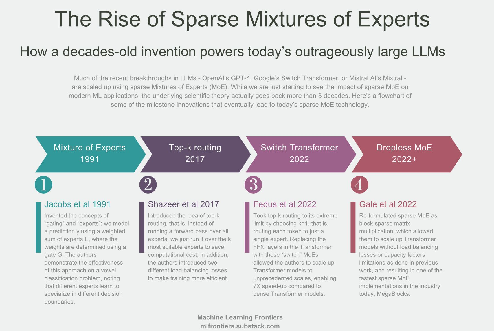
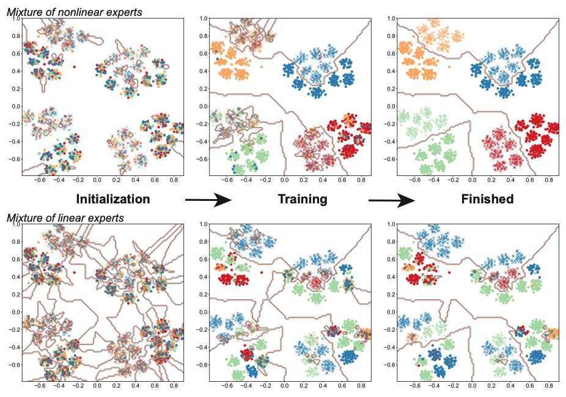
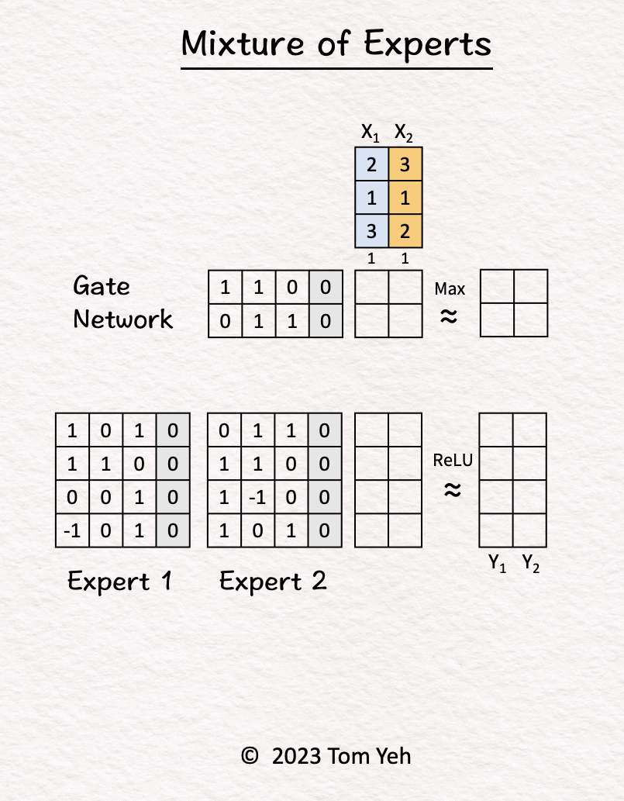
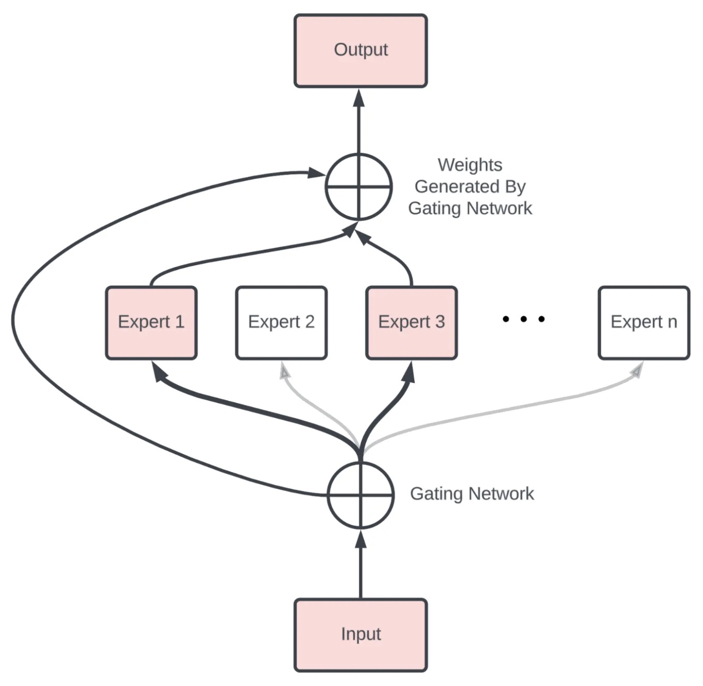
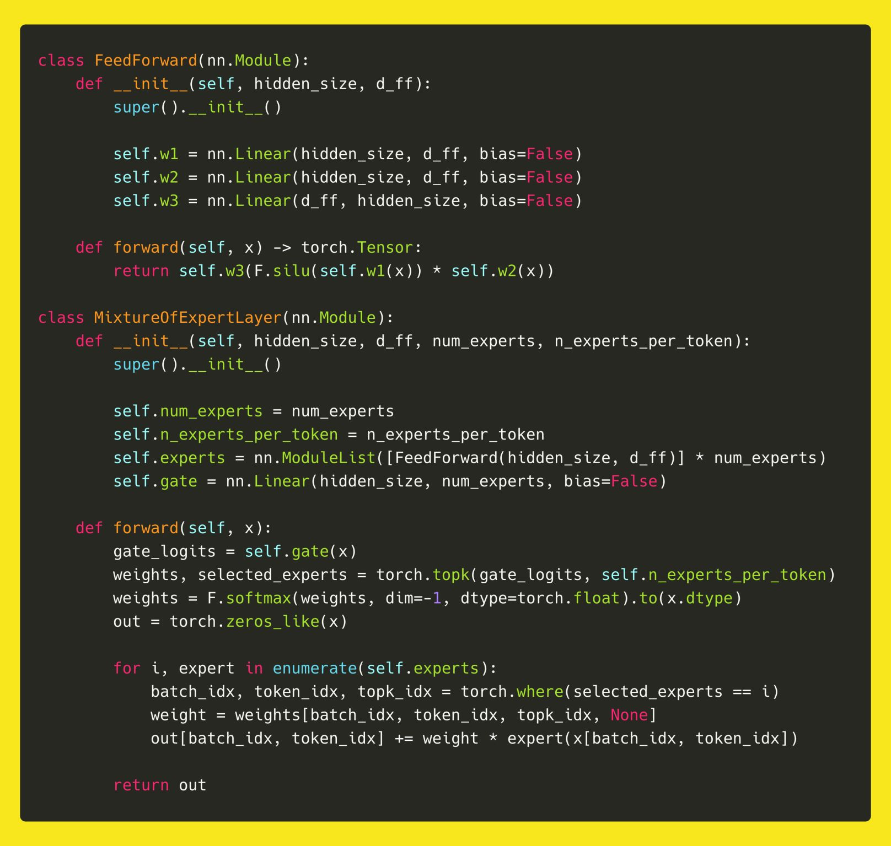
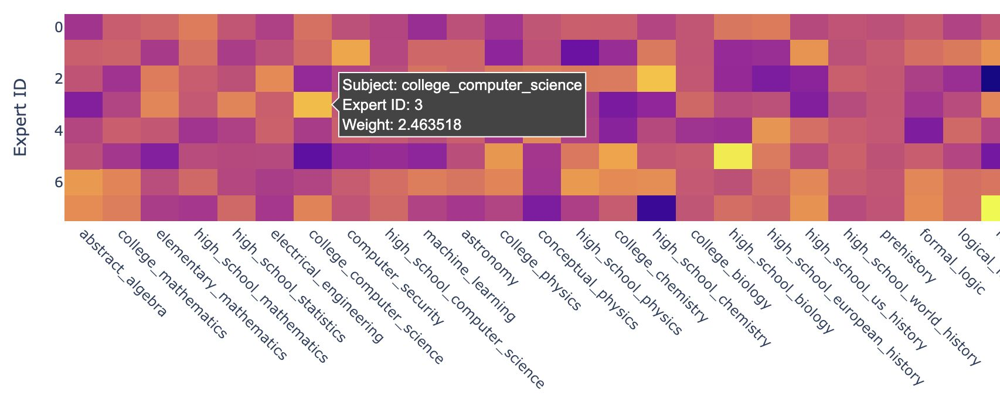
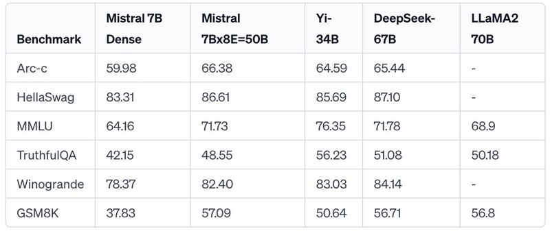

Primers • Mixture of Experts
- Overview
- Mixture-of-Experts (MoE): The Classic Approach
- The Deep Learning Way: Sparsely-Gated MoE
- Expert Choice Routing
- Implications and Outlooks
- The “How” Behind MoE
- MoE Implementation
- Expert Specialization
- What’s Next?
- Related Papers
- Outrageously Large Neural Networks: The Sparsely-Gated Mixture-of-Experts Layer
- Scaling Vision with Sparse Mixture of Experts
- Modeling Task Relationships in Multi-task Learning with Multi-gate Mixture-of-Experts
- Mixture-of-Experts Meets Instruction Tuning: A Winning Combination for Large Language Models
- From Sparse to Soft Mixtures of Experts
- Switch Transformers
- QMoE: Practical Sub-1-Bit Compression of Trillion-Parameter Models
- MegaBlocks: Efficient Sparse Training with Mixture-of-Experts
- MoE-LLaVA: Mixture of Experts for Large Vision-Language Models
- Mixture of LoRA Experts
- JetMoE: Reaching Llama2 Performance with 0.1M Dollars
- MoE Models
- Further Reading
- Citation
Overview
- Artificial neural networks have emerged as the cornerstone of deep learning, offering a remarkable way of drawing valuable insights from a plethora of data. However, the efficacy of these neural networks hinges heavily on their parameter count. Mixture-of-Experts (MoE) presents an efficient approach to dramatically increasing a model’s capabilities without introducing a proportional amount of computational overhead.
- Originally proposed in 1991 by Robert A. Jacobs et al., MoE adopts a conditional computation paradigm by only selecting parts of an ensemble, referred to as experts, and activating them depending on the data at hand. The MoE structure appeared long before the popularization of deep learning.
- The infographic below (source) outlines the significant milestones in the development of Sparse Mixtures of Experts (MoE) technology, which has been instrumental in the advancements of machine learning and particularly in the scaling of large language models (LLMs) like OpenAI’s GPT-4 and Google’s Switch Transformer.
- Starting with the first milestone in 1991, we have “Mixture of Experts” by Jacobs et al., which introduced the foundational concepts of “gating” and “experts”. This approach models predictions by using a weighted sum of experts’ opinions, with the weights determined by a gating function.
- Moving to 2017, “Top-k routing” by Shazeer et al. was introduced. It streamlined the process by running inputs over the k most suitable experts to reduce computational costs. Additionally, the paper introduced load balancing losses to enhance training efficiency.
- In 2022, the “Switch Transformer” by Fedus et al. pushed top-k routing further by selecting only the most relevant expert for each token, streamlining the architecture of transformer models significantly and allowing them to scale up to unprecedented levels.
- Finally, also in 2022, “Dropless MoE” by Gale et al. reformulated sparse MoE as a block-sparse matrix multiplication, which allowed scaling up transformer models without the load balancing losses or capacity limitations seen in previous works. This led to one of the fastest sparse MoE implementations in the industry, referred to as MegaBlocks.
- The figure emphasizes that these innovations have been part of a journey that has spanned over three decades, suggesting that the field has a robust foundation of research and development. It indicates optimism for future innovations that will continue to make sparse MoE more efficient, paving the way for even larger and more precise machine learning models across various domains.

Mixture-of-Experts (MoE): The Classic Approach
- The MoE concept is a type of ensemble learning technique initially developed within the field of artificial neural networks. It introduces the idea of training experts on specific subtasks of a complex predictive modeling problem.
- In a typical ensemble scenario, all models are trained on the same dataset, and their outputs are combined through simple averaging, weighted mean, or majority voting. However, in Mixture-of-Experts (MoE), each “expert” model within the ensemble is only trained on a subset of data where it can achieve optimal performance, thus narrowing the model’s focus. Put simply, MoE is an architecture that divides input data into multiple sub-tasks and trains a group of experts to specialize in each sub-task. These experts can be thought of as smaller, specialized models that are better at solving their respective sub-tasks.
- The popularity of MoE only rose recently as the appearance of Large Language Models (LLMs) and transformer-based models in general swept through the machine learning field. Consequently, this is because of modern datasets’ increased complexity and size. Each dataset contains different regimes with vastly different relationships between the features and the labels.
- To appreciate the essence of MoE, it is crucial to understand its architectural elements:
- Division of dataset into local subsets: First, the predictive modeling problem is divided into subtasks. This division often requires domain knowledge or employs an unsupervised clustering algorithm. It’s important to clarify that clustering is not based on the feature vectors’ similarities. Instead, it’s executed based on the correlation among the relationships that the features share with the labels.
- Expert Models: These are the specialized neural network layers or experts that are trained to excel at specific sub-tasks. Each expert receives the same input pattern and processes it according to its specialization. Put simply, an expert is trained for each subset of the data. Typically, the experts themselves can be any model, from Support Vector Machines (SVM) to neural networks. Each expert model receives the same input pattern and makes a prediction.
- Gating Network (Router): The gating network, also called the router, is responsible for selecting which experts to use for each input data. It works by estimating the compatibility between the input data and each expert, and then outputs a softmax distribution over the experts. This distribution is used as the weights to combine the outputs of the expert layers. Put simply, this model helps interpret predictions made by each expert and decide which expert to trust for a given input.
- Pooling Method: Finally, an aggregation mechanism is needed to make a prediction based on the output from the gating network and the experts.
- The gating network and expert layers are jointly trained to minimize the overall loss function of the MoE model. The gating network learns to route each input to the most relevant expert layer(s), while the expert layers specialize in their assigned sub-tasks.
- This divide-and-conquer approach effectively delegates complex tasks to experts, enabling efficient processing and improved accuracy. Together, these components ensure that the right expert handles the right task. The gating network effectively routes each input to the most appropriate expert(s), while the experts focus on their specific areas of strength. This collaborative approach leads to a more versatile and capable overall model.
Put simply, a Mixture of Experts (MoE) is how an ensemble of AI models decides as one. It’s basically multiple “experts”, i.e., individual models, in a “trend coat”.
Intuition
- This section seeks to answer exactly how the experts specialize, and in what? Also, how exactly does gating work, and what does it do under the hood?
- Recent research has started to give us some insights. Here’s a neat visualization from the paper “Towards Understanding the Mixture-of-Experts Layer in Deep Learning” by Chen et. al (2022), which shows how a 4-expert MoE model learns to solve a binary classification problem on a toy dataset that’s segmented into 4 clusters.
- Initially, the experts (shown as different colors) are all over the place, but as training proceeds, different experts “specialize” in different clusters until there’s almost a 1:1 correspondence. That specialization is entirely random, and only driven by the small initial random perturbations. Meanwhile, the gate is learning to (1) cluster the data and (2) map experts to clusters.

- Another important take-away from this toy experiment is that non-linearity appears to be the key to the success of MoE. Experts with linear activation simply don’t work as well as those with non-linear (cubic in this work) activation.
Gate Functionality
- refers to two distinct but interconnected functions of the “gate” in a Mixture of Experts (MoE) model:
- Clustering the Data: In the context of an MoE model, clustering the data means that the gate is learning to identify and group together similar data points. This is not clustering in the traditional unsupervised learning sense, where the algorithm discovers clusters without any external labels. Instead, the gate is using the training process to recognize patterns or features in the data that suggest which data points are similar to each other and should be treated similarly. This is a crucial step because it determines how the data is organized and interpreted by the model.
- Mapping Experts to Clusters: Once the gate has identified clusters within the data, its next role is to assign or map each cluster to the most appropriate expert within the MoE model. Each expert in the model is specialized to handle different types of data or different aspects of the problem. The gate’s function here is to direct each data point (or each group of similar data points) to the expert that is best suited to process it. This mapping is dynamic and is based on the strengths and specialties of each expert as they evolve during the training process.
- In summary, the gate in an MoE model is responsible for organizing the incoming data into meaningful groups (clustering) and then efficiently allocating these groups to the most relevant expert models within the MoE system for further processing. This dual role of the gate is critical for the overall performance and efficiency of the MoE model, enabling it to handle complex tasks by leveraging the specialized skills of its various expert components.
Hands-On Exercise: How does an MoE model work?
- Credits to Tom Yeh for this exercise.
- Let’s calculate an MoE model by hand, with the following config: (i) number of experts: 2, (ii) tokens: 2, (iii) sparse.
- Step-by-step walkthrough:
- The MoE block receives two tokens (blue, orange).
- Gate Network processes \(X_1\) (blue) and determined \(\text{Expert}_2\) should be activated.
- \(\text{Expert}_2\) processes \(X_1\) (blue).
- Gate Network processes \(X_2\) (orange) and determined \(\text{Expert}_1\) should be activated.
- \(\text{Expert}_1\) processes \(X_2\) (orange).
- ReLU activation function processes the outputs of the experts and produces the final output.

Key Benefits
- Size: The model can get really large (while still being efficient, as highlighted in the next point) simply by adding more experts. In this example, adding one more expert means adding 16 more weight parameters.
- Efficiency: The gate network will select a subset of experts to actually compute, in the above exercise: one expert. In other words, only 50% of the parameters are involved in processing a token.
The Deep Learning Way: Sparsely-Gated MoE
- In 2017, an extension of the MoE paradigm suited for deep learning was proposed by Noam Shazeer et al.
- In most deep learning models, increasing model capacity generally translates to improved performance when datasets are sufficiently large. Generally, when the entire model is activated by every example, it can lead to “a roughly quadratic blow-up in training costs, as both the model size and the number of training examples increase”, stated by Shazeer et al.
- Although the disadvantages of dense models are clear, there have been various challenges for an effective conditional computation method targeted toward modern deep learning models, mainly for the following reasons:
- Modern computing devices like GPUs and TPUs perform better in arithmetic operations than in network branching.
- Larger batch sizes benefit performance but are reduced by conditional computation.
- Network bandwidth can limit computational efficiency, notably affecting embedding layers.
- Some schemes might need loss terms to attain required sparsity levels, impacting model quality and load balance.
- Model capacity is vital for handling vast data sets, a challenge that current conditional computation literature doesn’t adequately address.
- The MoE technique presented by Shazeer et al. aims to achieve conditional computation while addressing the abovementioned issues. They could increase model capacity by more than a thousandfold while only sustaining minor computational efficiency losses.
- The authors introduced a new type of network layer called the “Sparsely-Gated MoE Layer.” They are built on previous iterations of MoE and aim to provide a general-purpose neural network component that can be adapted to different types of tasks.
- The Sparsely-Gated MoE architecture (henceforth, referred to as the MoE architecture), consists of numerous expert networks, each being a simple feed-forward neural network and a trainable gating network. The gating network is responsible for selecting a sparse combination of these experts to process each input.

- The fascinating feature here is the use of sparsity in the gating function. This means that for every input instance, the gating network only selects a few experts for processing, keeping the rest inactive. This sparsity and expert selection is achieved dynamically for each input, making the entire process highly flexible and adaptive. Notably, the computational efficiency is preserved since inactive parts of the network are not processed.
- The MoE layer can be stacked hierarchically, where the primary MoE selects a sparsely weighted combination of “experts.” Each combination utilizes a MoE layer.
- Moreover, the authors also introduced an innovative technique called Noisy Top-\(K\) Gating. This mechanism adds a tunable Gaussian noise to the gating function, retains only the top \(k\) values, and assigns the rest to negative infinity, translating to a zero gating value. Such an approach ensures the sparsity of the gating network while maintaining robustness against potential discontinuities in the gating function output. Interestingly, it also aids in load balancing across the expert networks.
- In their framework, both the gating network and the experts are trained jointly via back-propagation, the standard training mechanism for neural networks. The output from the gating network is a sparse, n-dimensional vector, which serves as the gate values for the n-expert networks. The output from each expert is then weighted by the corresponding gating value to produce the final model output.
- The Sparse MoE architecture has been a game-changer in LLMs, allowing us to scale up modeling capacity with almost constant computational complexity, resulting breakthroughs such as the Switch Transformer, GPT-4, Mixtral-8x7b, and more.
Expert Choice Routing
- Despite the popularity of MoE in recent transformer-based models demonstrated by the Switch Transformer, GLaM, V-MoE, and FLAN-MoE, improvements and research potentials remain in the area.
- In any case of a MoE scheme, the routing or gating function may cause specific experts to be undertrained as it overfits other experts. Regularization has been introduced to avoid too many examples being routed to a single or a particular subset of experts. Additionally, Google Research proposed “Expert Choice Routing” in November 2022, aiming to improve upon the potential flaw and explicitly targeting language models.
- Unlike traditional MoE models, the EC routing method is founded on a different approach to assigning “experts” to “tokens” within an MoE model. Instead of assigning tokens to experts as traditional MoE models do, EC reverses this process, assigning experts to tokens based on their importance or difficulty.
- EC routing sets an “expert capacity” value to regulate how many tokens an expert can handle simultaneously. It’s calculated as the average number of tokens per expert in a batch of input sequences, which is then multiplied by a “capacity factor”. The capacity factor is a variable that determines the average number of experts each token can be assigned to. By adjusting the capacity factor, researchers can control how many experts work on each token, providing flexibility in allocating computation resources.
- To decide which tokens should be assigned to which experts, the EC method uses a “token-to-expert score matrix.” This matrix scores the compatibility between each token and each expert, ranking which experts would best fit each token. Based on these scores, the most relevant tokens for each expert are selected via a “top-k function”. The k here refers to the number of tokens chosen for each expert.
- Once the most relevant tokens have been identified for each expert, a permutation function is applied to arrange the data. This means reshuffling the data so that each expert gets its assigned tokens, allowing for efficient parallel computation across all the experts.
Implications and Outlooks
- Incorporating MoE into deep learning is a relatively new development, gaining traction only as models for NLP and computer vision tasks began to scale significantly. Before this, the demand for conditional computation was less pronounced than it is for contemporary Large Language Models (LLM) and intricate CNNs.
- In 2021, Meta AI conducted a dedicated study for MoE models trained on language data, comparing how MoE models scale in comparison with dense models. They found that other than fine-tuning, MoE-based models can match the performance of dense models with a quarter of the computing. They could scale MoE models up to a trillion parameters (this was long before GPT-4 was released) and consistently outperform their dense model counterparts.
- The same year, Google Brain proposed V-MoE, a vision transformer utilizing sparse MoE layers. They found that V-MoE can match the performance of state-of-the-art models with as little as half of the computational resources required.
- More famously, GPT-4 was also leaked to be adopting a MoE scheme with 8 local models, each containing 220 billion parameters, totaling a whopping 1.7 trillion parameters.
The “How” Behind MoE
- Although the success of MoE is clear in the deep learning field, as with most things in deep learning, our understanding of how it can perform so well is rather unclear.
- Notably, each expert model is initialized and trained in the same manner, and the gating network is typically configured to dispatch data equally to each expert. Unlike traditional MoE methods, all experts are trained jointly with the MoE layer on the same dataset. It is fascinating how each expert can become “specialized” in their own task, and experts in MoE do not collapse into a single model.
- The paper “Towards Understanding Mixture of Experts in Deep Learning” by Zixiang Chen et al. attempts to interpret the “how” behind the MoE layers. They conclude that the “cluster structure of the underlying problem and the non-linearity of the expert is pivotal to the success of MoE.”
- Although the conclusion does not provide a direct answer, it helps to gain more insight into the simple yet effective approach of MoE.
MoE Implementation
- Credits to the following section go to The AIEdge.
- The Mixture of Experts architecture is relatively straightforward to implement. An implementation that closely aligns with the one found in Mistral 7B is presented below.

Overview
- The architecture, as implemented in the above code, uses a routing mechanism to direct each input token to the most relevant experts. The router, implemented as a linear layer in the
gatevariable, transforms hidden states into logits that are subsequently converted into selection probabilities. These probabilities determine which experts contribute to the output for each token. The final output for each token is a weighted sum of the outputs from the selected experts, ensuring that each part of the input data is processed by the most suitable parts of the network. This method enhances the model’s efficiency and scalability by leveraging specialized networks (experts) only when they are most relevant.
Components
FeedForward Class
- This class defines an individual expert, which is a basic feed-forward network. It consists of three linear layers:
w1andw2transform the input tensor, andw3combines these transformations.
- The
forwardmethod computes the output of this feed-forward network by applying the sequence of transformations and non-linear activations (SiLU, also known as Swish).
MixtureOfExpertsLayer Class
- This class orchestrates the interaction of multiple experts to process the input data.
- Initialization (
__init__):num_experts: Total number of expert networks.n_experts_per_token: Number of experts that should process each token.experts: A list of expert networks.gate: A linear layer that acts as the router, which computes logits (pre-softmax scores) that determine how much each expert contributes to processing each token.
- Forward Pass (
forward):gate_logits: The router outputs logits for each token.weights, selected_experts: Usingtorch.topk, the topn_experts_per_tokenexperts are selected based on the highest logits for each token, indicating which experts are most relevant for each token.weights: Normalized using softmax to convert logits into probabilities indicating the importance of each selected expert’s contribution.out: Initializes an output tensor with zeros, having the same shape as the inputx.- For each expert, the method computes the weighted contribution of the expert’s output to the final output tensor. This is done only for selected experts for each token.
- Initialization (
Expert Specialization
What’s Next?
- Theoretically, a deeper understanding of MoE architectures and their working principles is needed. As we saw in Chen et al.’s paper, the reasons behind the success of MoE layers are still partially obscure. Therefore, more theoretical and empirical research is required to demystify the intrinsic mechanics of these models, potentially leading to their optimization and better generalization.
- Additionally, how to design more effective gating mechanisms and expert models is an open question with great potential for future exploration. While Expert Choice Routing offers a promising direction, other innovative approaches might enhance the routing mechanism.
- Lastly, while MoE has shown impressive results in domains like NLP and computer vision, there is considerable room to explore its utility in other domains, such as reinforcement learning, tabular data domains, and more.
- The journey of MoE is in its infancy in the realm of deep learning, with many milestones yet to be achieved. However, its potential for transforming how we understand and deploy deep learning models is enormous. With the current state of computing, it’s unlikely that we will see significant improvements to hardware as rapidly as we see improvements to modeling techniques. By leveraging the inherent strength of the MoE paradigm—the division of complex tasks into simpler subtasks handled by specialized expert models—we may continue to push the boundaries of what is achievable with deep learning. And that, indeed, is an exciting prospect to look forward to.
Related Papers
Outrageously Large Neural Networks: The Sparsely-Gated Mixture-of-Experts Layer
- The capacity of a neural network to absorb information is limited by its number of parameters. Conditional computation, where parts of the network are active on a per-example basis, has been proposed in theory as a way of dramatically increasing model capacity without a proportional increase in computation. In practice, however, there are significant algorithmic and performance challenges. Also, static neural network architectures apply the same function to every example. In contrast, input dependent models attempt to tailor the function to each example. While it is straightforward for a human to manually specify a single static architecture, it is infeasible to specify every input-dependent function by hand. Instead, the input-dependent function must be automatically inferred by the model, which introduces an extra level of complexity in optimization.
- Given the need to automatically infer architectures for each example, a natural solution is to define a single large model (supernetwork) with a numerous sub-networks (experts), and route examples through a path in the supernetwork. The figure below from Ramachandran and Le (2019) visualizes an example of a routing network.. Intuitively, similar examples can be routed through similar paths and dissimilar examples can be routed through different paths. The example-dependent routing also encourages expert specialization, in which experts devote their representational capacity to transforming a chosen subset of examples.

- Learning to route examples to well-matched experts is critical for good performance. Effective routing can be achieved by training another small neural network (router) that learns to route examples through the supernetwork. The router takes the example as input and outputs the next expert to use. The router can take advantage of the intermediate representations of the example produced in the supernetwork.
- This paper by Shazeer et al. in ICLR 2017 addresses these challenges and finally realize the promise of conditional computation, achieving greater than 1000x improvements in model capacity with only minor losses in computational efficiency on modern GPU clusters.
- They introduce a Sparsely-Gated Mixture-of-Experts layer (MoE), consisting of up to thousands of feed-forward sub-networks. A trainable gating network determines a sparse combination of these experts to use for each example. In this per-example routing setup, different examples are processed by different subcomponents, or experts, inside a larger model, a.k.a. a supernetwork.
- Specifically, the proposed MoE layer takes as an input a token representation \(x\) and then routes this to the best determined top-\(k\) experts, selected from a set \(\left\{E_i(x)\right\}_{i=1}^N\) of \(N\) experts. The router variable \(W_r\) produces logits \(h(x)=W_r \cdot x\) which are normalized via a softmax distribution over the available \(N\) experts at that layer. The gate-value for expert \(i\) is given by,
- The top-\(k\) gate values are selected for routing the token \(x\). If \(\mathcal{T}\) is the set of selected top-\(k\) indices then the output computation of the layer is the linearly weighted combination of each expert’s computation on the token by the gate value,
- They apply the MoE to the tasks of language modeling and machine translation, where model capacity is critical for absorbing the vast quantities of knowledge available in the training corpora. We present model architectures in which a MoE with up to 137 billion parameters is applied convolutionally between stacked LSTM layers. On large language modeling and machine translation benchmarks, these models achieve significantly better results than state-of-the-art at lower computational cost.
- The following diagram from the paper illustrates a Mixture of Experts (MoE) layer embedded within a recurrent language model. In this case, the sparse gating function selects two experts to perform computations. Their outputs are modulated by the outputs of the gating network.

Scaling Vision with Sparse Mixture of Experts
- Almost all prevalent computer vision models networks are “dense,” that is, every input is processed by every parameter.
- This paper by Riquelme et al. from Google Brain introduces the Vision Mixture of Experts (V-MoE), a novel approach for scaling vision models. The V-MoE is a sparsely activated version of the Vision Transformer (ViT) that demonstrates scalability and competitiveness with larger dense networks in image recognition tasks.
- The paper proposes a sparse variant of the Vision Transformer (ViT) that uses a mixture-of-experts architecture. This approach routes each image patch to a subset of experts, making it possible to scale up to 15B parameters while matching the performance of state-of-the-art dense models.
- An innovative extension to the routing algorithm is presented, allowing prioritization of subsets of each input across the entire batch. This adaptive per-image compute leads to a trade-off between performance and computational efficiency during inference.
- The figure below from the paper shows an overview of the architecture. V-MoE is composed of \(L\) ViT blocks. In some, we replace the MLP with a sparsely activated mixture of MLPs. Each MLP (the expert) is stored on a separate device, and processes a fixed number of tokens. The communication of these tokens between devices is shown in this example, which depicts the case when \(k=1\) expert is selected per token. Here each expert uses a capacity ratio \(C=\frac{4}{3}\): the sparse MoE layer receives 12 tokens per device, but each expert has capacity for \(16\left(\frac{16 \cdot 1}{12}=\frac{4}{3}\right.\)). Non-expert components of V-MoE such as routers, attention layers and normal MLP blocks are replicated identically across devices.

- The V-MoE shows impressive scalability, successfully trained up to 15B parameters, and demonstrates strong performance, including 90.35% accuracy on ImageNet.
- The paper explores the transfer learning abilities of V-MoE, showing its adaptability and effectiveness across different tasks and datasets, even with limited data.
- A detailed analysis of the V-MoE’s routing decisions and the behavior of its experts is provided, offering insights into the model’s internal workings and guiding future improvements.
- V-MoE models require less computational resources than dense counterparts, both in training and inference, thanks to their sparsely activated nature and the efficient use of the Batch Prioritized Routing algorithm.
- The paper concludes with the potential of sparse conditional computation in vision tasks, emphasizing the environmental benefits due to reduced CO2 emissions and the promising directions for future research in large-scale multimodal or video modeling.
- The paper represents a significant advancement in the field of computer vision, particularly in the development of scalable and efficient vision models.
Modeling Task Relationships in Multi-task Learning with Multi-gate Mixture-of-Experts
- This paper by Ma et al. published in KDD 2018, introduces a novel approach to multi-task learning called Multi-gate Mixture-of-Experts (MMoE). The method aims to enhance the performance of multi-task learning models by better handling the relationships between different tasks.
- The MMoE model adapts the Mixture-of-Experts (MoE) framework to multi-task learning by sharing expert submodels across all tasks and using a gating network optimized for each task. This design allows the model to dynamically allocate shared and task-specific resources, efficiently handling tasks with varying degrees of relatedness.
- The paper presents experiments using synthetic data and real datasets, including a binary classification benchmark and a large-scale content recommendation system at Google. These experiments demonstrate MMoE’s effectiveness in scenarios where tasks have low relatedness and its superiority over traditional shared-bottom multi-task models in terms of both performance and trainability.
- MMoE’s architecture consists of multiple experts (feed-forward networks) and a gating network for each task, which determines the contribution of each expert to the task. This setup allows the model to learn nuanced relationships between tasks and allocate computation resources more effectively.
- The following figure from the paper shows a (a) shared-Bottom model, (b) one-gate MoE model, (c) multi-gate MoE model.

- In the experiments with the Census-income dataset, a UCI benchmark dataset, the task was to predict whether an individual’s income exceeds $50,000 based on census data. The dataset contains demographic and employment-related information. MMoE’s application to this dataset involved addressing the challenge of binary classification using multiple socio-economic factors as input features.
- On synthetic data, MMoE showed better performance, especially when task correlation is low, and demonstrated improved trainability with less variance in model performance across runs. On real-world datasets, including the UCI Census-income dataset and Google’s content recommendation system, MMoE consistently outperformed baseline models in terms of accuracy and robustness.
- MMoE offers computational efficiency by using lightweight gating networks and shared expert networks, making it suitable for large-scale applications. The experiments on Google’s recommendation system highlighted MMoE’s ability to improve both engagement and satisfaction metrics in live experiments compared to single-task and shared-bottom models.
Mixture-of-Experts Meets Instruction Tuning: A Winning Combination for Large Language Models
- The paper titled “Mixture-of-Experts Meets Instruction Tuning: A Winning Combination for Large Language Models” presents an innovative approach to enhancing the performance and scalability of Large Language Models (LLMs) by combining Sparse Mixture-of-Experts (MoE) architecture with instruction tuning. - Sparse MoE is a neural architecture that adds learnable parameters to LLMs without increasing inference costs. In contrast, instruction tuning trains LLMs to follow instructions more effectively.
- The authors advocate for the combination of these two approaches, demonstrating that MoE models benefit significantly more from instruction tuning compared to their dense model counterparts.
- The paper presents three experimental setups: direct finetuning on individual downstream tasks without instruction tuning; instruction tuning followed by few-shot or zero-shot generalization on downstream tasks; and instruction tuning supplemented by further finetuning on individual tasks.
- The findings indicate that MoE models generally underperform compared to dense models of the same computational capacity in the absence of instruction tuning. However, this changes with the introduction of instruction tuning, where MoE models outperform dense models.
- The paper introduces the FLAN-MOE32B model, which outperforms FLAN-PALM62B on four benchmark tasks while using only a third of the FLOPs. This highlights the efficiency and effectiveness of the FLAN-MOE approach.
- The authors conduct a comprehensive series of experiments to compare the performance of various MoE models subjected to instruction tuning. These experiments include evaluations in natural language understanding, reasoning, and question-answering tasks. The study also explores the impact of different routing strategies and the number of experts on the performance of FLAN-MOE models, showing that performance scales with the number of tasks rather than the number of experts.
- The following image from the paper shows the effect of instruction tuning on MOE models versus dense counterparts for base-size models (same flops across all models in this figure). They perform single-task finetuning for each model on held-out benchmarks. Compared to dense models, MoE models benefit more from instruction-tuning, and are more sensitive to the number of instruction-tuning tasks. Overall, the performance of MoE models scales better with respect to the number of tasks, than the number of experts.

- The paper discusses the challenge of adapting MoE models to multilingual benchmarks and highlights the importance of incorporating diverse linguistic data during training to ensure effective language coverage.
- Overall, the paper “Mixture-of-Experts Meets Instruction Tuning” by Sheng Shen et al. presents significant advancements in the scalability and efficiency of LLMs through the novel integration of MoE architecture and instruction tuning, setting new standards in the field of natural language processing.
From Sparse to Soft Mixtures of Experts
- Sparse Mixture of Experts (MoE) architectures scale model capacity without large increases in training or inference costs. MoE allows us to dramatically scale model sizes without significantly increasing inference latency. In short, each “expert” can separately attend to a different subset of tasks via different data subsets before they are combined via an input routing mechanism. Thus, the model can learn a wide variety of tasks, but still specialize when appropriate. Despite their success, MoEs suffer from a number of issues: training instability, token dropping, inability to scale the number of experts, or ineffective finetuning.
- This paper by Puigcerver et al. from Google DeepMind proposes Soft MoE, a fully-differentiable sparse Transformer that addresses these challenges, while maintaining the benefits of MoEs.
- Extra-large models like Google’s PaLM (540B parameters) or OpenAI’s GPT-4 use Sparse MoE under the hood, which suffers from training instabilities, because it’s not fully differentiable. Soft-MoE replaces the non-differentiable expert routing with a differentiable layer. The end-to-end model is fully differentiable again, can be trained with ordinary SGD-like optimizers, and the training instabilities go away.
- Soft MoE performs an implicit soft assignment by passing different weighted combinations of all input tokens to each expert. As in other MoE works, experts in Soft MoE only process a subset of the (combined) tokens, enabling larger model capacity at lower inference cost.
- The following figure from the paper illustrates the main differences between Sparse and Soft MoE layers. While the router in Sparse MoE layers (left) learns to assign individual input tokens to each of the available slots, in Soft MoE layers (right) each slot is the result of a (different) weighted average of all the input tokens. Learning to make discrete assignments introduces several optimization and implementation issues that Soft MoE sidesteps.

- They propose a fully-differentiable sparse vision transformer (ViT) that addresses aforementioned challenges such as training instability, token dropping, and inefficient finetuning. In the context of visual recognition, Soft MoE greatly outperforms the standard ViT and popular MoE variants (Tokens Choice and Experts Choice). Soft MoE scales ViT models to >50B parameters with little effect on inference latency. For example, Soft MoE-Base/16 requires 10.5x lower inference cost (5.7x lower wall-clock time) than ViT-Huge/14 while matching its performance after similar training. Soft MoE also scales well: Soft MoE Huge/14 with 128 experts in 16 MoE layers has over 40x more parameters than ViT Huge/14, while inference time cost grows by only 2%, and it performs substantially better.
- The following figure from the paper illustrates the Soft MoE routing algorithm. Soft MoE first computes scores or logits for every pair of input token and slot, based on some learnable per-slot parameters. These logits are then normalized per slot (columns) and every slot computes a linear combination of all the input tokens based on these weights (in green). Each expert (an MLP in this work) then processes its slots (e.g. 2 slots per expert, in this diagram). Finally, the same original logits are normalized per token (i.e., by row) and used to combine all the slot outputs, for every input token (in blue). Dashed boxes represent learnable parameters.

- The following infographic (source) presents an overview of their results:

- PyTorch implementation.
Switch Transformers
- Proposed in Switch Transformers: Scaling to Trillion Parameter Models with Simple and Efficient Sparsity.
- In deep learning, models typically reuse the same parameters for all inputs. Mixture of Experts (MoE) defies this and instead selects different parameters for each incoming example. The result is a sparsely-activated model – with outrageous numbers of parameters – but a constant computational cost.
- This paper by Fedus et al. from Google in JMLR 2022 introduces the Switch Transformer which seeks to address the lack of widespread adoption of MoE which has been hindered by complexity, communication costs, and training instability.
- They simplify the MoE routing algorithm and design intuitive improved models with reduced communication and computational costs. Our proposed training techniques help wrangle the instabilities and they show large sparse models may be trained, for the first time, with lower precision (bfloat16) formats.
- The guiding design principle for Switch Transformers is to maximize the parameter count of a Transformer model (Vaswani et al., 2017) in a simple and computationally efficient way. The benefit of scale was exhaustively studied in Kaplan et al. (2020) which uncovered powerlaw scaling with model size, data set size and computational budget. Importantly, this work advocates training large models on relatively small amounts of data as the computationally optimal approach. Heeding these results, they investigate a fourth axis: increase the parameter count while keeping the floating point operations (FLOPs) per example constant. Our hypothesis is that the parameter count, independent of total computation performed, is a separately important axis on which to scale. They achieve this by designing a sparsely activated model that efficiently uses hardware designed for dense matrix multiplications such as GPUs and TPUs. In their distributed training setup, their sparsely activated layers split unique weights on different devices. Therefore, the weights of the model increase with the number of devices, all while maintaining a manageable memory and computational footprint on each device.
- Their switch routing proposal reimagines MoE. Shazeer et al. (2017) conjectured that routing to \(k > 1\) experts was necessary in order to have non-trivial gradients to the routing functions. The authors intuited that learning to route would not work without the ability to compare at least two experts. Ramachandran and Le (2018) went further to study the top-\(k\) decision and found that higher \(k\)-values in lower layers in the model were important for models with many routing layers. Contrary to these ideas, they instead use a simplified strategy where they route to only a single expert. They show this simplification preserves model quality, reduces routing computation and performs better. This \(k = 1\) routing strategy is later referred to as a Switch layer.
- The following figure from the paper illustrates the Switch Transformer encoder block. We replace the dense feed forward network (FFN) layer present in the Transformer with a sparse Switch FFN layer (light blue). The layer operates independently on the tokens in the sequence. They diagram two tokens (\(x_1\) = “More” and \(x_2\) = “Parameters” below) being routed (solid lines) across four FFN experts, where the router independently routes each token. The switch FFN layer returns the output of the selected FFN multiplied by the router gate value (dotted-line).

- They design models based off T5-Base and T5-Large to obtain up to 7x increases in pre-training speed with the same computational resources. These improvements extend into multilingual settings where they measure gains over the mT5-Base version across all 101 languages.
- Finally, they advance the current scale of language models by pre-training up to trillion parameter models on the “Colossal Clean Crawled Corpus” and achieve a 4x speedup over the T5-XXL model.
- Code.
QMoE: Practical Sub-1-Bit Compression of Trillion-Parameter Models
- This paper by Frantar and Alistarh from the Institute of Science and Technology Austria and Neural Magic Inc. presents QMoE, a framework designed to address the memory challenges in deploying large language models (LLMs) with Mixture-of-Experts (MoE) architectures.
- The key problem QMoE addresses is the massive memory requirement of large models, exemplified by the 1.6 trillion-parameter SwitchTransformer-c2048 model, which typically requires 3.2TB of memory. QMoE effectively compresses such models to less than 1 bit per parameter, enabling their execution on commodity hardware with minor runtime overheads.
- QMoE employs a scalable algorithm and a custom compression format paired with GPU decoding kernels. It compresses the SwitchTransformer-c2048 model to less than 160GB (0.8 bits per parameter) with minor accuracy loss in under a day on a single GPU.
- The implementation includes a highly scalable compression algorithm and a bespoke compression format, facilitating efficient end-to-end compressed inference. The framework enables running trillion-parameter models on affordable hardware, like servers equipped with NVIDIA GPUs, at less than 5% runtime overhead compared to ideal uncompressed execution.
- The paper discusses the challenges in compressing MoE models, including conceptual issues with existing post-training compression methods and practical scaling challenges. It overcomes these by introducing a custom compression format and highly-efficient decoding algorithms optimized for GPU accelerators.
- The technical contributions include a novel approach to handling massive activation sets and a unique system design for optimized activation offloading, expert grouping, and robustness modifications, ensuring efficient application of data-dependent compression to massive MoEs.
- The framework significantly reduces the size of large models, with QMoE compressed models achieving over 20x compression rates compared to 16-bit precision models. This reduction in size is accompanied by minor increases in loss on pretraining validation and zero-shot data.
- The paper also discusses the system design and optimizations made to address memory costs, GPU utilization, and reliability requirements. These include techniques like optimized activation offloading, list buffer data structures, lazy weight fetching, and expert grouping.
- The following figure from the paper illustrates the offloading execution for the sparse part of a Transformer block. An expert \(E_2\) and its corresponding input tokens \(X_E\) are fetched to GPU memory to produce \(E_2′\), which together with the corresponding outputs \(Y_E\) are written back to CPU again.

- The experiments demonstrate that QMoE effectively compresses MoE models while maintaining performance. The system was tested on various datasets, including Arxiv, GitHub, StackExchange, and Wikipedia, showing good performance preservation even for highly compressed models.
- The paper provides detailed insights into the encoding and decoding processes and the kernel implementation for the GPU, highlighting the challenges and solutions for achieving sub-1-bit per parameter compression.
- The QMoE framework is a significant step towards practical deployment of massive-scale MoE models, addressing key limitations of MoE architectures and facilitating further research and understanding of such models.
- The paper’s findings are significant as they make it feasible to deploy and research trillion-parameter models on more accessible hardware, potentially democratizing access to high-performance LLMs and spurring further innovation in the field.
MegaBlocks: Efficient Sparse Training with Mixture-of-Experts
- This paper by Gale et al. from Stanford University, Microsoft Research, and Google Research, introduces Dropless Mixture-of-Experts (MoE), a novel system for efficient MoE training on GPUs.
- The system, named MegaBlocks, addresses the limitations of current frameworks that restrict dynamic routing in MoE layers, often leading to a tradeoff between model quality and hardware efficiency due to the necessity of dropping tokens or wasting computation on excessive padding. Token dropping leads to information loss, as it involves selectively ignoring part of the input data, while padding adds redundant data to make the varying input sizes uniform, which increases computational load without contributing to model learning. This challenge arises from the difficulty in efficiently handling the dynamic routing and load-imbalanced computation characteristic of MoE architectures, especially in the context of deep learning hardware and software constraints.
- MegaBlocks innovatively reformulates MoE computations as block-sparse operations, developing new GPU kernels specifically for this purpose. These kernels efficiently manage dynamic, load-imbalanced computations inherent in MoEs without resorting to token dropping. This results in up to 40% faster end-to-end training compared to MoEs trained with the Tutel library, and 2.4 times speedup over DNNs trained with Megatron-LM.
- The system’s core contributions include high-performance GPU kernels for block-sparse matrix multiplication, leveraging blocked-CSR-COO encoding and transpose indices. This setup enables efficient handling of sparse inputs and outputs in both transposed and non-transposed forms.
- Built upon the Megatron-LM library for Transformer model training, MegaBlocks supports distributed MoE training with data and expert model parallelism. Its unique ability to avoid token dropping through block-sparse computation provides a fresh approach to MoE algorithms as a form of dynamic structured activation sparsity.
- The figure below from the paper shows a Mixture-of-Experts Layer. Shown for
num experts=3,top k=1andcapacity factor=1with the prevalent, token dropping formulation. First (1), tokens are mapped to experts by the router. Along with expert assignments, the router produces probabilities that reflect the confidence of the assignments. Second (2), the feature vectors are permuted to group tokens by expert assignment. If the number of tokens assigned to an expert exceeds its capacity, extra tokens are dropped. Third (3), the expert layers are computed for the set of tokens they were assigned as well as any padding needed for unused capacity. Lastly (4), the results of the expert computation are un-permuted and weighted by the router probabilities. The outputs for dropped tokens are shown here set to zero.

- Experiments demonstrate that MegaBlocks enables significant end-to-end training speedups for MoE models compared to existing approaches, especially as model size increases. The system also reduces the computational overhead and memory requirements associated with MoE layers, leading to more efficient utilization of hardware resources. Furthermore, the approach decreases the number of hyperparameters that need to be re-tuned for each model and task, simplifying the process of training large MoE models.
- The paper provides detailed insights into the design and performance of the block-sparse kernels, including analyses of throughput relative to cuBLAS batched matrix multiplication and discussions on efficient routing and permutation for MoEs. The results show that MegaBlocks’ kernels perform comparably to cuBLAS, achieving an average of 98.6% of cuBLAS’s throughput with minimal variations across different configurations.
- Code
MoE-LLaVA: Mixture of Experts for Large Vision-Language Models
- This paper by Lin et al. from Peking University, Sun Yat-sen University, FarReel Ai Lab, Tencent Data Platform, and Peng Cheng Laboratory introduces MoE-LLaVA, a novel training strategy for Large Vision-Language Models (LVLMs). The strategy, known as MoE-tuning, constructs a sparse model with a large number of parameters while maintaining constant computational costs and effectively addressing performance degradation in multi-modal learning and model sparsity.
- MoE-LLaVA uniquely activates only the top-k experts through routers during deployment, keeping the remaining experts inactive. This approach results in impressive visual understanding capabilities and reduces hallucinations in model outputs. Remarkably, with 3 billion sparsely activated parameters, MoE-LLaVA performs comparably to the LLaVA-1.5-7B and surpasses the LLaVA-1.5-13B in object hallucination benchmarks.
- The architecture of MoE-LLaVA includes a vision encoder, a visual projection layer (MLP), a word embedding layer, multiple stacked LLM blocks, and MoE blocks. The MoE-tuning process involves three stages: In Stage I, an MLP adapts visual tokens to the LLM. Stage II trains the whole LLM’s parameters except for the Vision Encoder (VE), and in Stage III, FFNs are used to initialize the experts in MoE, and only the MoE layers are trained.
- The following image from the paper illustrates MoE-tuning. The MoE-tuning consists of three stages. In stage I, only the MLP is trained. In stage II, all parameters are trained except for the Vision Encoder (VE). In stage III, FFNs are used to initialize the experts in MoE, and only the MoE layers are trained. For each MoE layer, only two experts are activated for each token, while the other experts remain silent.

- The model was evaluated on various visual understanding datasets, demonstrating its efficiency and effectiveness. MoE-LLaVA’s performance was on par with or even superior to state-of-the-art models with fewer activated parameters. The paper also includes extensive ablation studies and visualizations to illustrate the effectiveness of the MoE-tuning strategy and the MoE-LLaVA architecture.
- The paper provides a significant contribution to the field of multi-modal learning systems, offering insights for future research in developing more efficient and effective systems.
- Code
Mixture of LoRA Experts
- This paper by Wu et al. from MSR Asia and Tsinghua University, published in ICLR 2024, proposes Mixture of LoRA Experts (MOLE), focusing on efficient composition of Low-Rank Adaptation (LoRA) techniques. It addresses the challenge of effectively integrating multiple trained LoRAs, a method previously developed to fine-tune large pre-trained models with minimal computational overhead.
- MOLE employs a hierarchical weight control approach where each layer of a LoRA is treated as an expert. By integrating a learnable gating function within each layer, MOLE determines optimal composition weights tailored to specific domain objectives. This method enhances the performance of LoRA compositions and preserves their flexibility, addressing the limitations of linear arithmetic and reference tuning-based compositions which either diminish generative capabilities or involve high training costs.
- The figure below from the paper illustrates an overview of LoRA composition methods: (a) Linear arithmetic composition, which commonly applies the same composition weight \(\boldsymbol{W}_i\) to all layers of the \(i^{\text {th}}\) LoRA. (b) Reference tuning-based composition involves retraining a large model by integrating outputs from multiple LoRAs using manually-crafted mask information. (c) Our MoLE, which learns a distribution \(\Upsilon^j\) for the \(j^{\text {th}}\) layer of LoRAs to determine the composition weight \(\boldsymbol{W}_i^j\).

- During the training phase, MOLE predicts weights for each expert using a gating function while keeping other parameters frozen, resulting in minimal computational costs. In the inference phase, MOLE can utilize all trained LoRAs with preserved characteristics or allow for manual masking of LoRAs to adjust weights dynamically without retraining.
- The architecture incorporates gating functions at various hierarchical levels to effectively manage the contributions of different LoRA layers. The paper details two distinct inference modes facilitated by MOLE, enhancing its adaptability across various scenarios and tasks in both NLP and Vision & Language domains.
- The figure below from the paper illustrates the orkflow of MOLE. In the training phase, MOLE predicts weights for multiple LoRAs. In the inference phase, MOLE can allocate weights to multiple LoRAs, or, without altering the gating weights, achieve a more flexible LoRA composition by masking out undesired LoRAs and recalculating and distributing weights proportionally.

- Extensive experiments demonstrate that MOLE outperforms existing LoRA composition methods in terms of both qualitative and quantitative measures. Results from NLP and Vision & Language tasks illustrate that MOLE consistently achieves superior performance compared to traditional composition methods, validating its approach in a real-world setting.
- Code
JetMoE: Reaching Llama2 Performance with 0.1M Dollars
- This paper by Shen et al. from MIT-IBM Watson AI Lab, MIT EECS, Princeton University, and MyShell.ai & MIT introduces JetMoE-8B, a cost-effective large language model developed at the MIT-IBM Watson AI Lab, outperforming established models like Llama2-7B and Llama2-13B-Chat. JetMoE-8B extends the concept of sparse activation to both the attention and feed-forward layers. Despite being trained on a tight budget of under $100,000, JetMoE-8B employs 8 billion parameters, leveraging a Sparsely-gated Mixture-of-Experts (SMoE) architecture that activates only 2 billion parameters per input token. This architecture reduces inference computation by approximately 70% compared to Llama2-7B.
- JetMoE-8B is trained using the Megatron framework with Megablock enhancements, using pipeline parallelism to optimize computational costs and load balance during training. Notably, it incorporates innovations like shared KV projection in attention layers and a frequency-based auxiliary loss for training efficiency.
- The figure below from the paper illustrates the JetMoE architecture.

- For pretraining, JetMoE-8B utilized a mixture of real-world and synthetic datasets, totaling 1.25 trillion tokens. Datasets include RefinedWeb, StarCoder, and various components from The Pile, combined with synthetic datasets like OpenHermes 2.5 for diverse training inputs.
- Utilized a two-phase training approach, incorporating a mix of real and synthetic datasets with adjustments in data weighting during the learning rate decay phase to enhance model performance.
- The model underwent Distilled Supervised Fine-Tuning (dSFT) and Distilled Direct Preference Optimization (dDPO), refining model responses based on preferences from a teacher model to improve alignment with human-like conversational abilities.
- JetMoE-8B’s performance was benchmarked against other models in tasks like ARC-challenge, Hellaswag, and MMLU, showing superior performance in many areas, particularly in code-related benchmarks like MBPP and HumanEval.
- The training parameters, model configurations, and data mixtures are fully documented and made open-source to foster further academic and practical advancements in efficient LLM training methodologies.
- Code
MoE Models
GPT-4
- Read our GPT-4 primer here.
- Per a rumor, GPT-4 might be an 8-way Mixture-of-Experts (MoE) model with 8 220B parameters (a total of 1.76T parameters).
- A Mixture of Experts (MoE) model essentially revolves around a router that directs questions to the appropriate expert. If GPT-4 does adopt the MoE approach, it would consist of eight specialist models each trained in a specific domain, like mathematics, history, storytelling, etc. When a question is posed, the router analyses it and seamlessly forwards it to the most suitable expert.
- The concept of MoE is quite prevalent (refer Outrageously Large Neural Networks: the Sparsely-Gated Mixture-of-Experts Layer), with Langchain’s high-level implementation of an LLMRouterChain, and notable low-level integrated examples like Google’s Switch Transformer (refer Switch Transformers: Scaling to Trillion Parameter Models with Simple and Efficient Sparsity).
- Per yet another rumor, here are the specifics:
- Parameter count: GPT-4 is more than 10x the size of GPT-3; with a total of ~1.8 trillion parameters across 120 layers.
- Architecture: GPT-4 uses an MoE architecture; the main idea behind used an MoE model was to keep costs training/inference reasonable while ensuring great performance. In other words, it is not a dense transformer like, for instance, PaLM (or GPT-3). They utilizes 16 experts within their model, each is about ~111B parameters for MLP. 2 of these experts are routed per forward pass. There roughly ~55B shared parameters for attention.
- MoE routing: While the literature talks a lot about advanced routing algorithms for choosing which experts to route each token to, OpenAI’s is allegedly quite simple, for the current GPT-4 model.
- Inference: Each forward pass inference (generation of 1 token) only utilizes ~280B parameters and ~560 TFLOPs. This contrasts with the ~1.8 trillion parameters and ~3,700 TFLOP that would be required per forward pass of a purely dense model (vs. the MoE architecture that’s used).
- Dataset: GPT-4 is trained on ~13T tokens. These are not unique tokens, but the total amount of tokens seen over all epochs. There are millions of instruction fine-tuning data samples from ScaleAI & internally (probably acquired through ChatGPT + their API before they changed the policy).
- Training epochs: 2 epochs for text-based data and 4 for code-based data.
- Training paradigm: For pre-training GPT-4 32K, they utilized an 8K context length. The 32K context version of GPT-4 was based on fine-tuning of the 8K after the pre-training. Extending context is hard… but not impossible is a good reference on how to achieve this.
- Batch size: The batch size was gradually ramped up over a number of days on the cluster, but by the end, OpenAI was using a batch size of 60 million! This, of course, is “only” a batch size of 7.5 million tokens per expert due to not every expert seeing all tokens. For the real batch size:** Divide this number by the context width to get the real batch size.
- Parallelism strategies: To parallelize across all their A100s GPUs, they utilized 8-way tensor parallelism as that is the limit for NVLink. Beyond that, they used 15-way pipeline parallelism. Also apparently they used DeepSpeed ZeRo Stage 1 or block-level FSDP.
- Training cost: OpenAI’s training FLOPS for GPT-4 is ~2.15e25, on ~25,000 A100s for 90 to 100 days at about 32% to 36% MFU. Part of this extremely low utilization is due to an absurd number of failures requiring checkpoints that needed to be restarted from. If their cost in the cloud was about $1 per A100 hour, the training costs for this run alone would be about $63 million. Had H100s been used, pre-training could be done with ~8,192 H100s in ~55 days for $21.5 million at $2 per H100 hour.
- MoE tradeoffs: There are multiple MoE tradeoffs taken; for example, MoE is incredibly difficult to deal with on inference because not every part of the model is utilized on every token generation. This means some parts may sit dormant when other parts are being used. When serving users, this really hurts utilization rates. Researchers have shown that using 64 to 128 experts achieves better loss than 16 experts, but that’s purely research. There are multiple reasons to go with fewer experts. One reason for OpenAI choosing 16 experts is because more experts are difficult to generalize at many tasks. More experts can also be more difficult to achieve convergence with. With such a large training run, OpenAI instead chose to be more conservative on the number of experts.
- GPT-4 inference cost: GPT-4 costs 3x that of the 175B parameter DaVinci. This is largely due to the larger clusters required for GPT-4 and much lower utilization achieved. An estimate of it’s costs is $0.0049 cents per 1K tokens for 128 A100s to inference GPT-4 8K context width and $0.0021 cents per 1K tokens for 128 H100s to inference GPT-4 8K context width. It should be noted that they assume decent high utilization and keep batch sizes large.
- Multi-Query Attention: GPT-4 uses MQA instead of MHA (MQA is a classic choice at this point). Because of that only 1 head is needed and memory capacity can be significantly reduced for the KV cache. Even then, the 32K context width GPT-4 definitely cannot run on 40GB A100s, and the 8K is capped on max batch size.
- Continuous batching: OpenAI implements both variable batch sizes and continuous batching. This is so as to allow some level of maximum latency as well optimizing the inference costs.
- Vision multi-modal: They have a separate vision encoder from the text encoder, with cross-attention. The architecture is similar to Google DeepMind’s Flamingo. This adds more parameters on top of the 1.8T text-only GPT-4. It is fine-tuned with another ~2 trillion tokens, after the text only pre-training. On the vision model, OpenAI wanted to train it from scratch, but it wasn’t mature enough, so they wanted to derisk it by starting with text. One of the primary purposes of this vision capability is for autonomous agents able to read web pages and transcribe what’s in images and video. Some of the data they train on is joint data (rendered LaTeX/text), screenshots of web pages, YouTube videos: sampling frames, and run Whisper around it to get transcript.
- Speculative decoding: OpenAI might be using speculative decoding on GPT-4’s inference. The idea is to use a smaller faster model to decode several tokens in advance, and then feeds them into a large oracle model as a single batch. If the small model was right about its predictions (i.e., the larger model agrees), we can decode several tokens in a single batch. But if the larger model rejects the tokens predicted by the draft model then the rest of the batch is discarded. And we continue with the larger model. The conspiracy theory that the new GPT-4 quality had been deteriorated might be simply because they are letting the oracle model accept lower probability sequences from the speculative decoding model.
- Per Andrej Karpathy, speculative sampling/decoding/execution for LLMs is an excellent inference-time optimization. It hinges on the following unintuitive observation: forwarding an LLM on a single input token takes about as much time as forwarding an LLM on \(K\) input tokens in a batch (for larger \(K\) than what might be obvious). This unintuitive fact is because sampling is heavily memory bound: most of the “work” is not doing compute, it is reading in the weights of the transformer from VRAM into on-chip cache for processing. So if you’re going to do all that work of reading in all those weights, you might as well apply them to a whole batch of input vectors.
- At batch_size=1 (i.e. just generating a single stream of prediction on your computer), the inference is super duper memory-bound. The on-chip compute units are twiddling their thumbs while sucking model weights through a straw from DRAM. Every individual weight that is expensively loaded from DRAM onto the chip is only used for a single instant multiply to process each new input token. So the stat to look at is not FLOPS but the memory bandwidth.
- Let’s take a look:
- A100: 1935 GB/s memory bandwidth, 1248 TOPS
- MacBook M2: 100 GB/s, 7 TFLOPS
- The compute is ~200X but the memory bandwidth only ~20X. So the little M2 chip that could will only be about ~20X slower than a mighty A100. This is ~10X faster than you might naively expect just looking at ops.
- The situation becomes a lot more different when you inference at a very high batch size (e.g. ~160+), such as when you’re hosting an LLM engine simultaneously serving a lot of parallel requests. Or in training, where you aren’t forced to go serially token by token and can parallelize across both batch and time dimension, because the next token targets (labels) are known. In these cases, once you load the weights into on-chip cache and pay that large fixed cost, you can re-use them across many input examples and reach ~50%+ utilization, actually making those FLOPS count.
- In summary, why is LLM inference surprisingly fast on your MacBook? If all you want to do is batch 1 inference (i.e. a single “stream” of generation), only the memory bandwidth matters. And the memory bandwidth gap between chips is a lot smaller, and has been a lot harder to scale compared to flops.
- The reason we can’t naively use this fact to sample in chunks of \(K\) tokens at a time is that every \(N^{th}\) token depends on what token we sample at time at step \(N-1\). There is a serial dependency, so the baseline implementation just goes one by one left to right.
- Now the clever idea is to use a small and cheap draft model to first generate a candidate sequence of \(K\) tokens – a “draft”. Then we feed all of these together through the big model in a batch. This is almost as fast as feeding in just one token, per the above. Then we go from left to right over the logits predicted by the model and sample tokens. Any sample that agrees with the draft allows us to immediately skip forward to the next token. If there is a disagreement then we throw the draft away and eat the cost of doing some throwaway work (sampling the draft and the forward passing for all the later tokens).
- The reason this works in practice is that most of the time the draft tokens get accepted, because they are easy, so even a much smaller draft model gets them. As these easy tokens get accepted, we skip through those parts in leaps. The hard tokens where the big model disagrees “fall back” to original speed, but actually a bit slower because of all the extra work.
- In summary, this one weird trick works because LLMs are memory bound at inference time, in the “batch size 1” setting of sampling a single sequence of interest, that a large fraction of “local LLM” use cases fall into. And because most tokens are “easy”.
- More on this here: Blockwise Parallel Decoding for Deep Autoregressive Models, Accelerating Large Language Model Decoding with Speculative Sampling, and Fast Inference from Transformers via Speculative Decoding
- Per Andrej Karpathy, speculative sampling/decoding/execution for LLMs is an excellent inference-time optimization. It hinges on the following unintuitive observation: forwarding an LLM on a single input token takes about as much time as forwarding an LLM on \(K\) input tokens in a batch (for larger \(K\) than what might be obvious). This unintuitive fact is because sampling is heavily memory bound: most of the “work” is not doing compute, it is reading in the weights of the transformer from VRAM into on-chip cache for processing. So if you’re going to do all that work of reading in all those weights, you might as well apply them to a whole batch of input vectors.
- Inference architecture: The inference runs on a cluster of 128 GPUs. There are multiple of these clusters in multiple datacenters in different locations. It is done in 8-way tensor parallelism and 16-way pipeline parallelism. Each node of 8 GPUs has only ~130B parameters, or less than 30GB per GPU at FP16 and less than 15GB at FP8/int8. The model has 120 layers, so it fits in 15 different nodes. (Possibly the there are less layers on the first node since it needs to also compute the embeddings). According to these numbers: OpenAI should have trained on 2x the tokens if they were trying to go by Chinchilla’s optimal. This goes to show that they are struggling to get high quality data.
- Why no Fully Sharded Data Parallel (FSDP)? A possible reason for this could be that some of the hardware infra they secured is of an older generation. This is pretty common at local compute clusters as the organisation usually upgrade the infra in several “waves” to avoid a complete pause of operation. With such a high amount of pipeline parallelism it is very likely that they suffer from the “batch bubble”: slight idle time between batches.
- Dataset mixture: They trained on 13T tokens. CommonCrawl & RefinedWeb are both 5T. Remove the duplication of tokens from multiple epochs and we get to a much reasonable number of “unaccounted for” tokens: the “secret” data – parts of it probably came from Twitter, Reddit, and YouTube. Some speculations are: LibGen (4M+ books), Sci-Hub (80M+ papers), all of GitHub. Part of the missing dataset could also be custom dataset of college textbooks collected by hand for as much courses as possible. This is very easy to convert to text form and than use Self-Instruct to transform it into instruction form. This creates the “illusion” that GPT-4 “is smart” no matter who uses it: for computer scientists, it can help you with your questions about P!=NP; for a philosophy major, it can totally talk to you about epistemology. There are also papers that try to extract by force memorized parts of books from GPT-4 to understand what it trained on. There are some books it knows so well that it had seen them for sure. Moreover, it even knows the unique ids of project Euler problems.
Mixtral: Mistral’s 8x7B MoE Model
- Mixtral 8x7B (56B params) from Mistral follows a Mixture of Experts (MoE) architecture, consisting of 8x 7B experts. With 8 experts and a router network that selects two of them at every layer for the inference of each token, it looks directly inspired from rumors about GPT-4’s architecture. This information can be derived from the model metadata:
{"dim": 4096, "n_layers": 32, "head_dim": 128, "hidden_dim": 14336, "n_heads": 32, "n_kv_heads": 8, "norm_eps": 1e-05, "vocab_size": 32000, "moe": {"num_experts_per_tok": 2, "num_experts": 8}}
- From GPT-4 leaks, we can speculate that GPT-4 is a MoE model with 8 experts, each with 111B parameters of their own and 55B shared attention parameters (166B parameters per model). For the inference of each token, also only 2 experts are used.
- Since the model size (87GB) is smaller than 8x Mistral 7B (8*15GB=120GB), we could assume that the new model uses the same architecture as Mistral 7B but the attention parameters are shared, reducing the naïve 8x7B model size estimation.
- The conclusion is that (probably) Mistral 8x7B uses a very similar architecture to that of GPT-4, but scaled down:
- 8 total experts instead of 16 (2x reduction).
- 7B parameters per expert instead of 166B (24x reduction).
- 42B total parameters (estimated) instead of 1.8T (42x reduction).
- Free to use under Apache 2.0 license
- Outperforms Llama 2 70B with 6x faster inference.
- Matches or outperforms GPT-3.5
- Multilingual: vastly outperforms LLaMA 2 70B on French, Italian, German and Spanish
- Same 32K context as the original GPT-4.
- Each layer in a 8x MoE model has its FFN split into 8 chunks and a router picks 2 of them, while the attention weights are always used in full for each token. This means that if the new mistral model uses 5B parameters for the attention, you will use 5+(42-5)/4 = 14.25B params per forward pass.
- Mixtral is basically 8 models in a trenchcoat: the feedforward layers of the decoder blocks are divided into 8 experts, and for each token, a router will decide which 2 experts to allocate the processing to. The advantage of this architecture is that even though you have \(7 \times 8B = 47B\) parameters in total (considering shared parameters which are not unique to each expery), the model is much cheaper and fast to run since only \(\frac{2}{8}\) experts are activated for each prediction.
But how do you maintain good performance with only \(\frac{1}{4}^{th}\) of your model running at one time? The image below (source) gives us a view of the answer: there’s a marked specialization between experts, with one being stronger on logic, the other on history, and so on. The router knows which one is good at each subject, and like an excellent TV host, it carefully pick its experts to always get a good answer.

- Mistral has also released Mixtral 8x7B Instruct v0.1 trained using supervised fine-tuning and direct preference optimization (DPO). It scores 8.3 on MT-Bench making it the best open-source model, with performance comparable to GPT3.5.
- Mistral offers three chat endpoints with competitive pricing via Mistral AI La Plateforme:
- Mistral-tiny: Mistral 7B Instruct v0.2, upgraded base model with higher context length 8K \(\rightarrow\) 32K and better finetuning, 6.84 \(\rightarrow\) 7.61 on MT Bench.
- Mistral-small: Mistral 8x7B Instruct v0.1, matches or exceeds GPT-3.5 performance, multilingual.
- Mistral-medium: Outperforms GPT-3.5 on all metrics, multilingual.
- They’ve also announced Mistral-embed, an embedding model with a 1024 embedding dimension, which achieves 55.26 on MTEB.
- Refer MoE Explanation.
- Blog; La Plateforme; Mixtral-8x7B-v0.1 Base model; Mixtral-8x7B-v0.1 Instruct model.
Results
- Benchmark results comparing against the other SOTA OSS models as of this writing: LLaMA-2, Yi-34B (from 01.AI led by Kai-Fu Lee), and DeepSeek-67B (a strong model made by a quant trading company).

OpenMoE
- OpenMoE is a family of open-sourced MoE LLMs.
- Colossal AI’s PyTorch OpenMoE implementation including both training and inference with expert parallelism.
Further Reading
Citation
If you found our work useful, please cite it as:
@article{Chadha2020DistilledLossFunctions,
title = {Loss Functions},
author = {Chadha, Aman and Jain, Vinija},
journal = {Distilled AI},
year = {2020},
note = {\url{https://vinija.ai}}
}